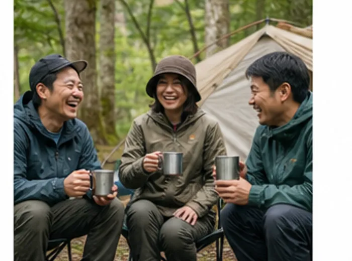
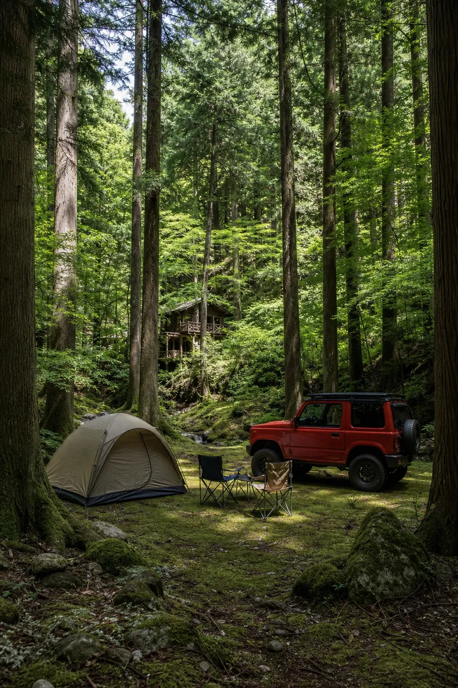
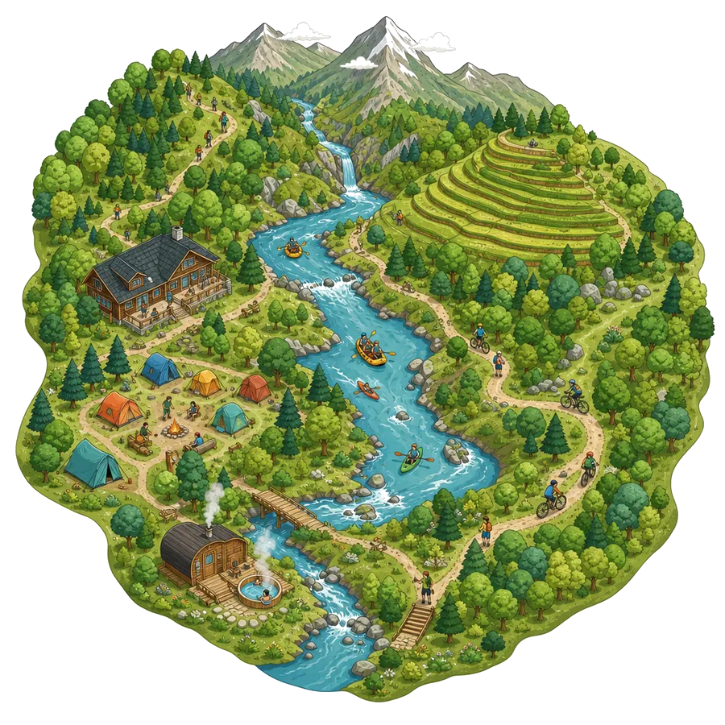
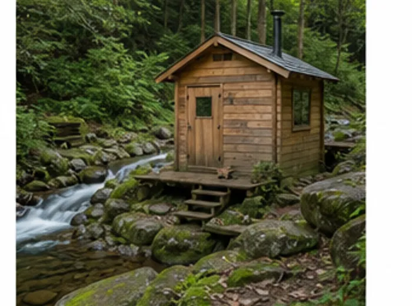
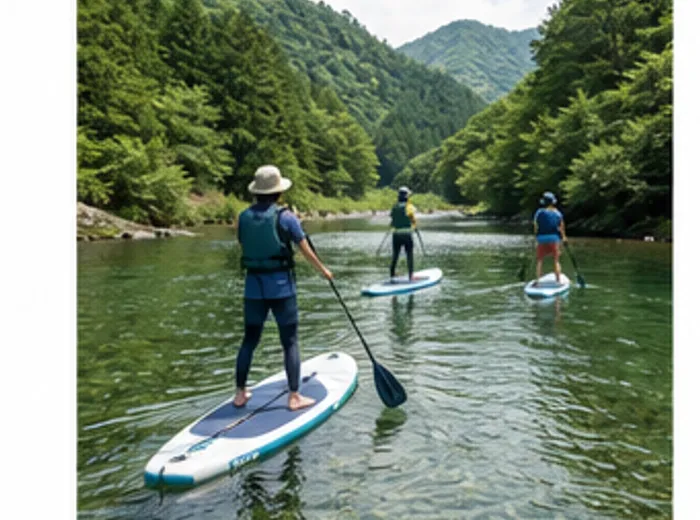

朝は谷から霧が上がってきます。区画は22、どのサイトからも川の音が届きます。 直火の焚き火台と薪の販売あり。手ぶらで来られる装備一式の貸し出しも用意しています。


からだを動かして、山の空気にどっぷり浸かって、
ここでしかできない時間をまるごと楽しむ。
標高900メートルの谷あいを流れる杣戸川と、
その川べりのキャンプ場をまるごとフィールドに使います。
外で過ごす一日を組み立てるための遊びを集めたのが「杣戸の外あそび」です。 小さな子ども連れから、道具にこだわる人まで、その日の気分で選べるようにメニューをそろえました。 まずは水辺からどうぞ。

朝は谷から霧が上がってきます。区画は22、どのサイトからも川の音が届きます。 直火の焚き火台と薪の販売あり。手ぶらで来られる装備一式の貸し出しも用意しています。

テントを張らずに泊まりたい日に。川に張り出したデッキ付きの小屋が4棟。 キッチンと寝具はそろっているので、食材だけ持って来てください。

足でこいで進むSUPです。立ってバランスを取る必要がないので、 はじめての人でもすぐ動かせます。水の透け方に驚くはずです。
流れのゆるい区間を、ガイドと一緒にのんびり下ります。 小学生から参加できます。濡れてもいい服でお越しください。
沢を歩いて、小さな滝をよじ登って、いちばん上の淵で泳ぎます。 装備はすべて貸し出します。夏のいちばん人気です。
薪で焚く小屋を川べりに置いています。ととのったら、そのまま川へ。 一日3枠・各2時間の貸し切りです。
ご予約と空き状況の確認は、LINEでのやり取りがいちばん早いです。 当日の天気で内容を変えることもあるので、気になることは何でも聞いてください。
キャンプ場とアクティビティの最新情報を発信しています。